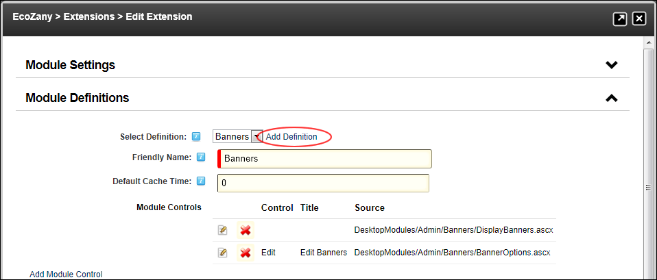
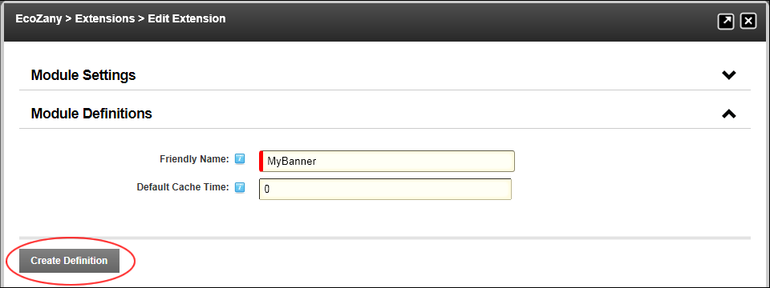

Adding a New Module Definition
How to add a new definition to a module using the Extensions module.
- Navigate to Host >
 Extensions.
Extensions.
- Select the Installed Extensions tab.
- Expand the Modules section.
- Click the Edit
 button beside the required module.
button beside the required module.
- Expand the Module Definitions section.
- At Select Definition, click the Add Definition link.

- In the Friendly Name text box, enter a friendly name for this definition.
- In the Default Cache Time text box, enter the default cache time for this module. A cache time of "-1" indicates that the module does not support output caching. The default setting is 0.

- Click the Create Definition link. The new module definition is now listed in the drop down list of the Select Definition field.